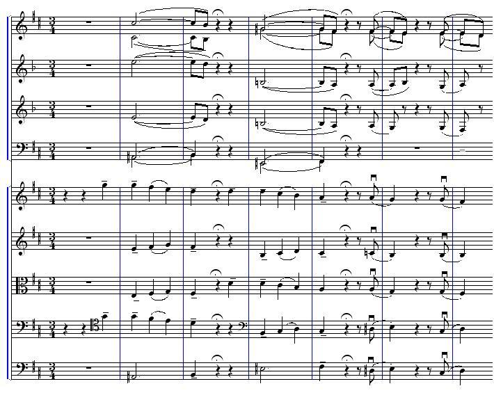
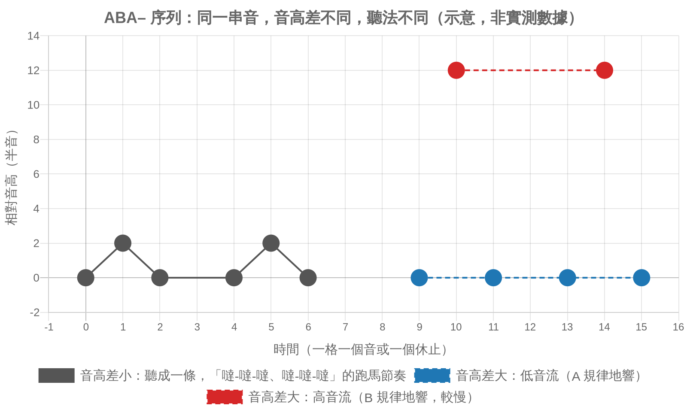
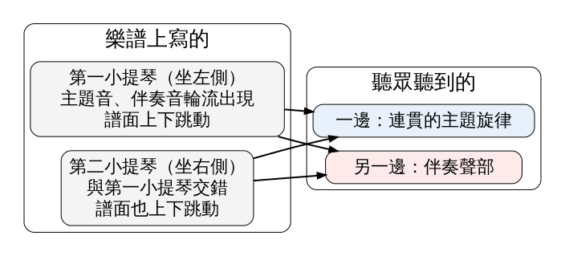

耳朵每秒收到的只是一道混在一起的空氣振動，大腦要自己判斷哪些聲音屬於同一個來源，再把它們串成一條可以跟著聽的「串流」。音高靠得近、速度夠快的音會被串在一起；音高離得遠的，會被拆成兩條。這堂課用 Albert Bregman 的聽覺場景分析，拆解柴可夫斯基《悲愴》終樂章開頭那段兩組小提琴都沒有真正「拉旋律」、觀眾卻聽到旋律的寫法。
史料 1893 年，柴可夫斯基完成第六號交響曲《悲愴》（Op. 74）。終樂章一開頭，弦樂奏出一句緩慢的悲歌。翻開總譜會發現一件怪事：第一小提琴的譜面忽高忽低，第二小提琴也一樣，兩行單獨拉出來都不成曲調（見圖 1）。主題的音被拆開，一個音給第一小提琴，下一個音給第二小提琴，伴奏聲部也用同樣的方式交錯。

圖 1｜柴可夫斯基第六號交響曲終樂章開頭的總譜打譜（Commons 使用者依原作重新排版）。下方一組譜表是弦樂，最上兩行即第一、第二小提琴，可以看到兩行都在高低之間跳動。來源：Žiga，Score of Tchaikovsky 6th Symphony, 4th movement (beginning)，2005。授權：CC0 1.0，來源頁面
在柴可夫斯基的年代，兩組小提琴分坐樂團最左和最右；今天多半並排坐在指揮左手邊。心理學家 Diana Deutsch 在 2010 年的文章裡提到，加州大學聖地牙哥分校的指揮 Thomas Nee 曾把校內樂團改回十九世紀的座位，讓第一、第二小提琴左右分開。照理說，每一邊傳來的都是跳動的音，可是聽眾聽到的是：主題從一邊傳來，伴奏從另一邊傳來。左右兩邊實際送出的音被耳朵重新分配了。（依二手文獻：Deutsch，〈Hearing music in ensembles〉，《Physics Today》，2010）
經典理論 加拿大心理學家 Albert S. Bregman（1936–2023）1965 年起在 McGill 大學任教，整個學術生涯都在那裡，1990 年由 MIT Press 出版《Auditory Scene Analysis: The Perceptual Organization of Sound》。他借用格式塔心理學「分群」的想法，主張聽覺要解決的核心問題是：耳膜上只有一道合起來的波形，大腦得把它分回一個個聲源。他的學生 Stephen McAdams 在 2023 年的悼文裡，把這本書比作現代版的 Helmholtz 的《On the Sensations of Tone》。
Bregman 把這件工作分成兩層（見圖 2）。第一層是「原始」的分群，由聲音本身的特徵推動，又分兩個方向。序列分群是水平的：前一個音和後一個音，是不是同一個東西發出的？音高靠得近、時間挨得緊、音色相似，就容易被串在一起。同時分群是垂直的：同一刻響起的好幾個頻率成分，要合成一個聲音，還是分屬不同聲源？同時開始、頻率彼此成諧波關係、來自同一方位，就容易被合在一起。第二層是「基模」分群，用聽者已經熟悉的旋律、語言和聲音知識，從混合中主動挑出要的東西。分好的結果，Bregman 稱為「聽覺串流」（auditory stream）。
圖 2｜聽覺場景分析的兩層分群。來源：本課程依 Bregman《Auditory Scene Analysis》1990，並參考 McAdams 2023、Bendixen 2014 的整理繪製。
實證研究 這個架構背後有一長串實驗。最經典的做法，是讓兩個音 A、B 交替出現。荷蘭研究者 van Noorden 在 1975 年用 ABA–ABA– 的排法（「–」是休止）：兩音音高相近時，聽起來是一條會「噠噠噠、噠噠噠」跑馬的節奏；音高拉開，跑馬節奏消失，變成兩條各自規律的音列，高的一條、低的一條（見圖 3）。速度越快，需要的音高差越小就會分開；Deutsch 指出，每秒約 8 到 10 個音時，音高遠近的效果特別強。（依二手文獻：Deutsch 2010；Micheyl 等 2010）

圖 3｜同一種 ABA– 排法，音高差小時聽成一條跑馬節奏（左），音高差大時分成高、低兩條串流（右）。示意，非實測數據。來源：本課程依 van Noorden 1975 的 ABA– 範式（依 Deutsch 2010、Bendixen 2014 的描述）繪製。
實證研究 分成兩條之後會發生什麼？Bregman 與 Campbell 在 1971 年的實驗裡，讓受試者聽一串快速循環、高低交錯的純音，請他們說出音的順序。當音被分成高、低兩條串流後，跨越兩條串流的音誰先誰後，就很難判斷。McAdams 的悼文把這類結果整理成一句：旋律與節奏這類「序列性質」，只在同一條串流裡才容易聽出來。（依二手文獻：Micheyl、Hunter 與 Oxenham 2010；McAdams 2023）
回到《悲愴》。用 Bregman 的架構來看，柴可夫斯基寫在紙上的分配是「依樂器分」：第一小提琴一行、第二小提琴一行。聽眾耳朵裡的分配是「依音高分」：主題的音彼此靠得近，自成一串；伴奏的音落在另一個音域，又自成一串。當兩種分法衝突時，序列分群的音高線索贏了，樂器和座位的線索輸了（見圖 4）。

圖 4｜《悲愴》終樂章開頭：樂譜依樂器分聲部，聽眾依音高重新分群。來源：本課程依 Deutsch，〈Hearing music in ensembles〉，2010 的描述繪製。
實證研究 Deutsch 把這個例子和她 1975 年發現的「音階錯覺」放在一起。實驗裡，耳機兩邊同時播一條上行、一條下行的音階，而且每一個音都在左右耳之間換邊。如果耳朵照方位分群，每一耳聽到的都該是跳來跳去的音；實際上，大多數慣用右手的人聽到高音集中在右耳、低音集中在左耳，兩條都是平順的旋律。把耳機左右對調，聽到的還是一樣。方位的線索被音高接近的線索蓋過去。
聽《悲愴》終樂章時可以留意三件事。第一，開頭幾小節的弦樂不要想著「第一小提琴在拉什麼」，只跟著最容易跟的那條線走，你會發現自己自動抓到一條連貫的悲歌。第二，如果手邊有總譜影像（圖 1），對照著看，會發現你聽到的旋律在譜上沒有一行是完整的。第三，現代樂團小提琴並排坐，左右分離本來就不明顯；Nee 的實驗特地改回舊座位，正是要看方位線索能不能把旋律拆回兩邊。結果拆不回來。
這段音樂可以在 Wikimedia Commons 聽到 Musopen 交響樂團演奏的公有領域錄音：IV. Finale – Adagio lamentoso（Musopen Symphony）。
實證研究 作曲家很早就在利用同一條原理的反面。Deutsch 提到，巴洛克作曲家如 Bach 與 Telemann，會讓一件獨奏樂器在高、低兩個音域之間快速來回，讓聽眾聽出兩條平行的旋律；Bach 的大提琴組曲裡就有明顯的例子。《悲愴》是兩組樂器合成一條線，Bach 是一件樂器拆成兩條線，靠的都是音高遠近。
史料 剪接師兼聲音設計師 Walter Murch 在 2005 年刊於 Transom 的長文〈Dense Clarity – Clear Density〉裡，回憶他替 George Lucas 的《THX 1138》（1971）做聲音的經驗。片中的機器人警察穿著金屬鞋，他自己做了裝彈簧和鐵片的鞋子，凌晨兩點到舊金山一座博物館錄走路聲，再一步一步對到畫面上。他發現一兩個警察走路時，每一步都得對準；到了三個，對不對準都沒差，耳朵已經把它們聽成「一群人在走」。
經典理論 Murch 據此提出他稱為「二又二分之一定律」的經驗法則：同一類聲音疊到將近三層，觀眾還能分辨個別的聲音，也感受得到整體；再多就糊成一團。他把聲音排在一道光譜上，一端是對白這種要靠語言解碼的「編碼」聲音，另一端是直接作用在身體上的音樂，各種音效落在中間（見圖 5）。《現代啟示錄》（Apocalypse Now，1979）直升機登陸海灘那場戲，最初六軌預混一起放就成了「一大團噪音」；他讓不同「顏色」的聲音輪流進出，例如某句台詞出現時把音樂抽掉。這是從業者的經驗主張；他在文中用左右腦分工來解釋，本課沒有查到他引用的研究。
圖 5｜Murch 的聲音光譜，從編碼（對白）到體現（音樂），他用紫到紅的顏色標記。來源：本課程依 Murch，〈Dense Clarity – Clear Density〉，Transom，2005 繪製。
拿來和 Bregman 對照：Murch 說的「一種顏色最多兩層半」，接近序列分群的問題，同類、同音域的聲音彼此太像，耳朵分不開，只能聽成一團。他說「不同顏色可以疊到五層」，則像是在利用聲音之間的差異，讓每一層各自成為一條串流。這部電影仍受著作權保護，本課不放劇照，可以在 Transom 原文中看到他附的片段與圖表：transom.org/2005/walter-murch。
誤解一：「聽成一條還是兩條，由聲音本身決定。」實證研究 同一串 ABA– 的音，在音高差與速度介於中間時，聽法會在一條與兩條之間來回切換，研究者稱為雙穩態或多穩態；Bendixen（2014）的回顧也整理了可預測性與注意力如何影響這種切換。物理訊號沒變，聽到的組織可能改變。
誤解二：「每個人聽到的分群都一樣。」實證研究 Deutsch 報告，音階錯覺在慣用右手的人身上最一致；慣用左手的人可能聽到左右相反的版本，或更複雜的組合。原始分群有共同的規律，個別差異仍然存在。
誤解三：「Bregman 只是把視覺的格式塔法則搬到聽覺。」經典理論 McAdams 指出，Bregman 的靈感主要來自格式塔心理學，但他也大量借用電腦科學與人工智慧的概念，把原始分群看成多種線索共同投票的「捷思」過程，並提出基模分群和「舊加新」策略：一個連續的聲音被更大的聲音蓋住時，只要前後接得起來，耳朵會「補」出它一直在響。
看（5 分鐘） 在通勤路上或市場裡閉上眼睛一分鐘，數一數你聽得出幾個「聲源」：機車、說話聲、店家的音樂、腳步。睜開眼睛，用紙筆寫下來，在每一項旁邊註明你是靠什麼分出它的：音高、節奏、方位，還是你本來就認得那個聲音。
做（10 分鐘） 找兩個敲起來音高差很多的物品，例如玻璃杯和木頭桌面。先慢慢交替敲：杯、桌、杯、（停）、杯、桌、杯、（停），用手機錄下來。再用最快的速度敲同樣的順序，也錄下來。接著換兩個音高接近的物品（兩個相似的杯子），重複一次。播放四段錄音，聽聽哪一段還有「噠噠噠」的跑馬感，哪一段變成兩條各自的節奏。
回顧（5 分鐘）
來源 | 類型 | 查核日期 |
McAdams, S.，〈Albert S. Bregman (1936–2023)〉，《Music Perception》41(1): 74–75，2023，DOI 10.1525/mp.2023.41.1.74 https://www.mcgill.ca/mpcl/files/mpcl/mcadams_2023_muspercept.pdf | 史料；經典理論（依二手文獻） | 2026-11-10 |
Bregman, A. S.，《Auditory Scene Analysis: The Perceptual Organization of Sound》，MIT Press，1990（未見原書；作者 McGill 網站目前停止服務，內容依 McAdams 2023、Bendixen 2014、Deutsch 2010） | 經典理論（依二手文獻） | 2026-11-10 |
CIRMMT，〈In memoriam: Albert S. Bregman (1936-2023)〉（生平、McGill 任教年份） https://www.cirmmt.org/en/news/inmemoriam-albregman | 史料 | 2026-11-10 |
Deutsch, D.，〈Hearing music in ensembles〉，《Physics Today》63(2)，2010，DOI 10.1063/1.3326988（音階錯覺、《悲愴》與 Nee 的座位實驗、van Noorden、Bach） https://physicstoday.aip.org/features/hearing-music-in-ensembles | 實證研究；史料 | 2026-11-10 |
Bendixen, A.，〈Predictability effects in auditory scene analysis: a review〉，《Frontiers in Neuroscience》8:60，2014 https://pmc.ncbi.nlm.nih.gov/articles/PMC3978260 | 實證研究 | 2026-11-10 |
Micheyl, Hunter & Oxenham，〈Auditory stream segregation and the perception of across-frequency synchrony〉，《Journal of Experimental Psychology: Human Perception and Performance》36(4): 1029–1039，2010（含 Bregman & Campbell 1971 的轉述） https://pmc.ncbi.nlm.nih.gov/articles/PMC4315665 | 實證研究 | 2026-11-10 |
Bregman & Campbell，〈Primary auditory stream segregation and perception of order in rapid sequences of tones〉，《Journal of Experimental Psychology》89(2): 244–249，1971（未見全文，依上列 Micheyl 等 2010） | 實證研究（依二手文獻） | 2026-11-10 |
Murch, W.，〈Dense Clarity – Clear Density〉，Transom，2005 https://transom.org/2005/walter-murch/ | 史料；經典理論（從業者主張） | 2026-11-10 |
《悲愴》終樂章公有領域錄音，Musopen Symphony，Wikimedia Commons 來源頁面 | 史料（錄音，Public domain） | 2026-11-10 |
圖 1 授權頁面：Score of Tchaikovsky 6th Symphony, 4th movement (beginning)，Wikimedia Commons https://commons.wikimedia.org/wiki/File:Cajkovski-Pateticna-4st.jpg | 史料（圖片，CC0 1.0） | 2026-11-10 |